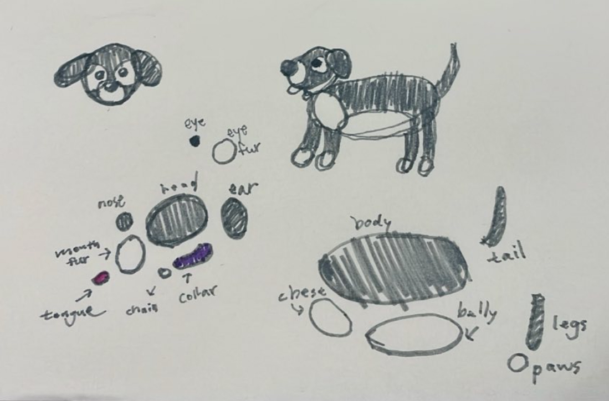
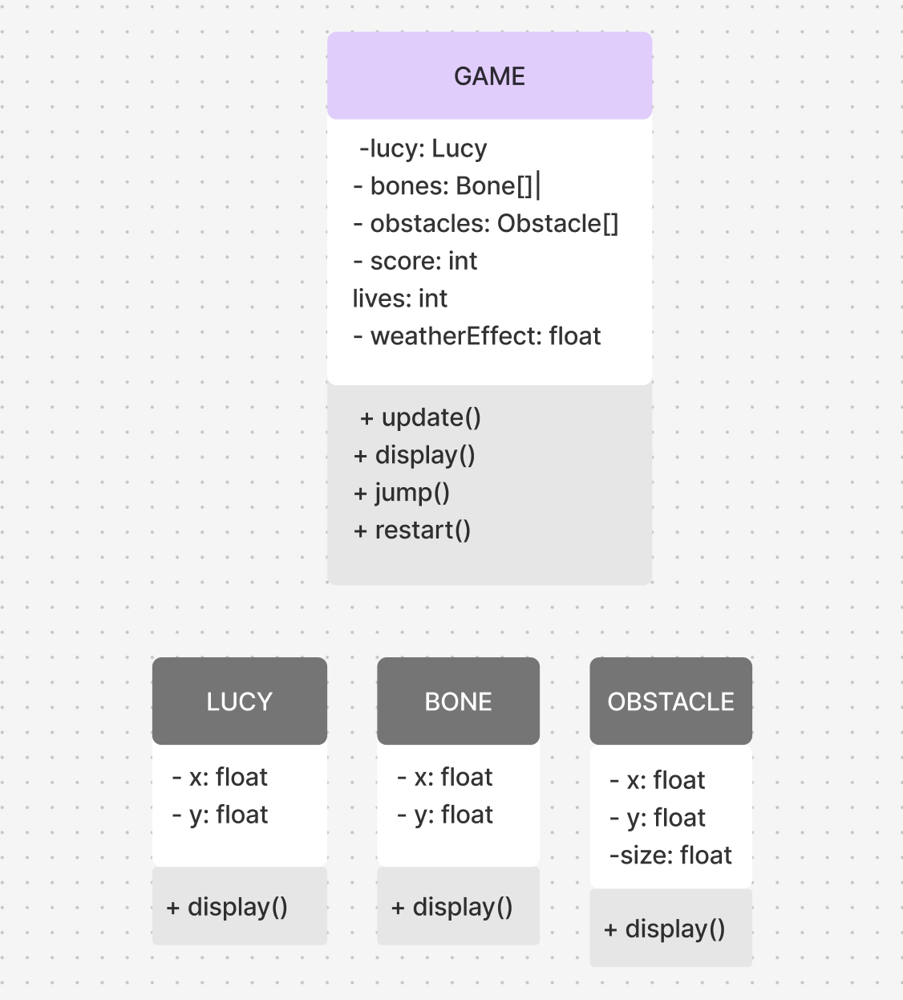
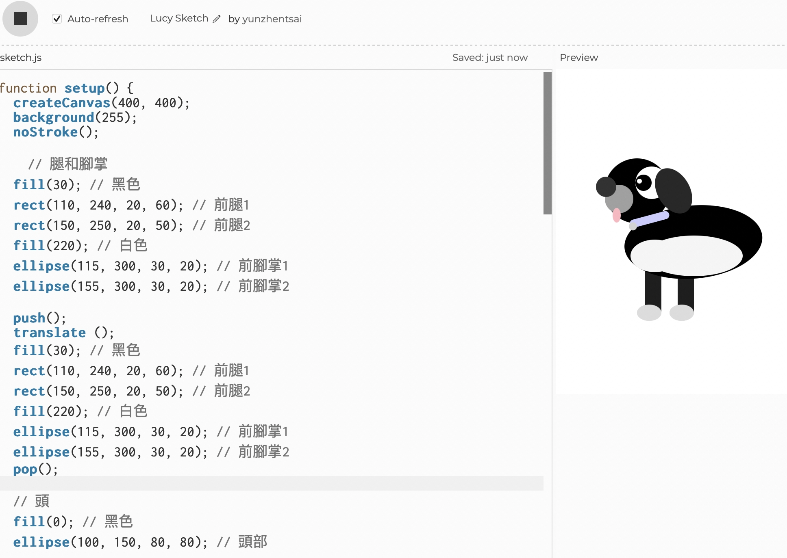
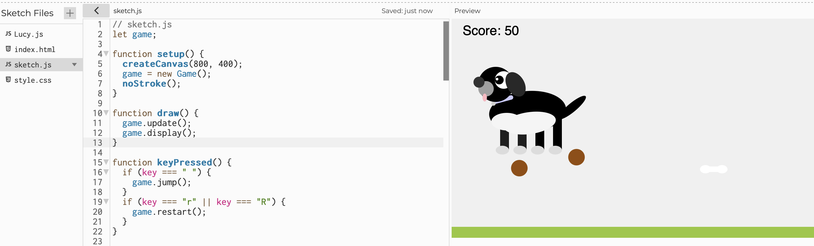

Lucy: Don't eat cat poop!!
Welcome to the game where you control Lucy, the rectangular dog, as she jumps to collect bones and avoid obstacles (cat poop). Press "a" on keyboard to make Lucy jump and try to score as many points as possible without losing all your lives!
Design Process
The design process of this game is as follows:
- Determine the game theme: Choose the dog character Lucy as the protagonist, with the main goal of collecting bones and avoiding cat poop.
- Design Lucy's character. 
- Draw UML diagrams and flowcharts: Plan the game's logic and class relationships to ensure system scalability and maintainability. 
- Draw Lucy on p5.js first. 
- Implement game logic using p5.js: Create different classes (such as Lucy, bones, and cat poop) through object-oriented programming and add behaviors and properties to them.
- I couldn't fix the bug of lucy.js not correctly detecting the touch with bones and poop so I had to make Lucy a simple square than a cute character.
- Add user interaction: Allow players to control the weather to change the difficulty of the game. The better the weather the easier it is: Lucy could jump higher and less cat poop emerging too.
.
.
.
.
Seminar Readings
Here are the readings feedback for this week's 2 seminar papers:
.
1. Programming Design Systems-Introduction
This part emphasizes the changing needs of design. Even though the basic idea of design stays the same, the new products need new ways of thinking. Designers must adapt and learn to create for digital devices, which is very different from print.
.
This sentence shows how the book will teach both design and programming. It is a good way to learn because it connects two important fields. Understanding visual design with algorithms can help designers create more innovative work.
.
This part highlights the importance of modern education in design. Traditional methods may not be enough for today’s world. It is important to teach new skills that can help designers understand both graphic design and new technologies.
.
.
2. What do prototypes prototype?
It is not easy. Good communication is very important to make sure everyone understands what the prototype can do. Designers need to know their audience well to know that they can share and make the audience understands their ideas clearly.
.
This part talks about the challenge of communication for designers. It is hard to explain prototypes to many different people. Clear communication is very important so that everyone in the team understands the prototype the same way as teamwork is so important in the design process.
.
This paragraph shows the good and bad sides of prototype design. Designers feel excited when users can use real data, but they also see the limits of the prototype. This makes designers think and learn more, which is very important for improving their work.